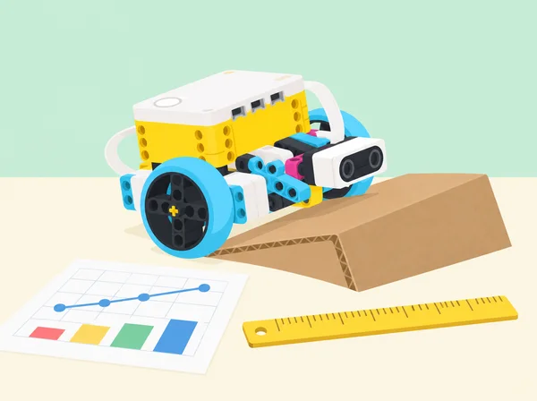
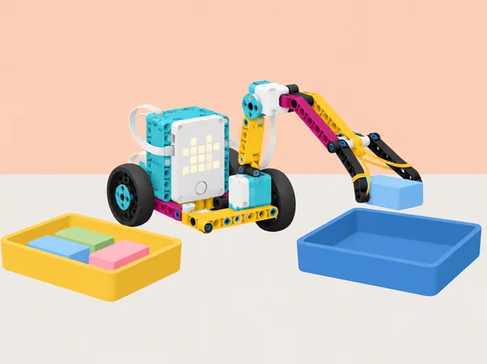

Provar abans de decidir
🏷️ Disseny, energia i ús responsable
🌱 Situació, repte i intenció
🎯 Aprenentatges i vocabulari
- Definir una pregunta de prova, variables i criteris abans de comparar dos prototips.
- Registrar intents repetits amb unitats i condicions constants i descriure la variabilitat.
- Comparar una tasca humana i una robòtica sense convertir el resultat en una classificació general.
- Usar evidències per revisar un prototip i explicar quan les dades són insuficients.
🧰 Materials i preparació
Set SPIKE Prime 45678, hub, dos motors, sensor de força si es prova l’aturada, app SPIKE i els models de Driving Base/Going the Distance; cartró, regle, paper quadriculat, fitxes lleugeres, safates i quadern de dades. Mesureu només allò que l’instrument pot observar: distància, temps, encerts, massa i alçada quan hi haja balança/regle. Les dades d’energia són estimacions amb supòsits explícits. El sensor de força no és una cèl·lula de càrrega calibrada i el sensor de distància no mesura pressió, duresa ni força.
📅 Seqüència didàctica
Provar prototips: el pont mòbil de l’escola (45 min)
Fase 1 · Activem i prediem
Definiu el repte: travessar una separació entre dues taules amb una carretera que s’òbriga per deixar passar una caixa alta de cartó. Acordeu dos criteris mesurables —per exemple, salvar uns 20 cm i sostenir una càrrega lleugera— i el límit de materials.
Fase 2 · Explorem i construïm
Observeu imatges o esquemes d’un pont mòbil, registreu una observació i dibuixeu dues solucions. Trieu-ne una amb una raó i feu-ne una primera versió amb SPIKE Prime i cartó.
Fase 3 · Expliquem i registrem
Si el prototip es mou, planifiqueu el codi i assigneu rols. Mesureu la separació i proveu una càrrega comuna de fitxes o tela durant un temps acordat; registreu si aguanta i on falla.
Fase 4 · Apliquem i millorem
Afegiu el requisit que el tauler s’òbriga prou per a una caixa alta. Modifiqueu només la zona necessària, torneu a provar estabilitat i moviment i depureu el codi en relació amb el mecanisme.
Fase 5 · Comprovem i reflexionem
Persona i robot davant de la mateixa tasca (90 min)
Fase 1 · Activem i prediem
Observeu imatges de braços robòtics en fabricació, classificació o enviament. Anoteu tasques, entorns i per què es podria triar una màquina encara que una persona siga més ràpida.
Fase 2 · Explorem i construïm
Marqueu dues safates separades uns 30 cm i poseu tres blocs iguals drets dins d’un marc. Acordeu transferir-ne un cada vegada mantenint-lo dret; si cau, torna a l’origen. Munteu una mà robòtica d’obrir/tancar i ajusteu el motor si cal.
Fase 3 · Expliquem i registrem
Cadascú fa tres intents amb el gripper i tres amb la mà pròpia. Una persona transfereix i l’altra cronometra; canvieu rols. Anoteu tots els temps, caigudes i observacions, sense eliminar cap intent.
Fase 4 · Apliquem i millorem
Calculeu mitjana o rang, feu un gràfic i redacteu una afirmació condicionada: quin mètode és més ràpid o constant en aquestes condicions? Afegiu una altra tasca on una persona puga adaptar-se millor.
Fase 5 · Comprovem i reflexionem
Comparar pinces i agafadors (90 min)
Fase 1 · Activem i prediem
Pregunta d’enginyeria: quin agafador convé per a cada objecte i quins efectes socials té automatitzar la recollida? Observeu imatges de braços en classificació i neteja i anoteu avantatges/costos possibles de seguretat, temps, manteniment, inversió i tasques laborals.
Fase 2 · Explorem i construïm
En parelles, dissenyeu dues terminacions per al mateix braç SPIKE —per exemple pinça suau i pala ampla— i una comparació manual. Trieu objectes nets i segurs: forma rígida, peça ampla i plana, i peça lleugera deformable; registreu dimensions i massa aproximada.
Fase 3 · Expliquem i registrem
Manteniu constants distància, orientació i safata. Feu tres intents per objecte i mètode; si cau, torna a l’origen i compta. Registreu èxit, caigudes, temps i marques/deformació.
Fase 4 · Apliquem i millorem
Compareu dades en taula o gràfic i determineu quin agafador és més ràpid, fiable o suau per a cada objecte; pot no haver-hi un únic guanyador. Proposeu una millora per al cas més feble i expliqueu a qui ajudaria i quin límit conserva.
Fase 5 · Comprovem i reflexionem

Tasques repetitives, potència i precisió (90 min)
Fase 1 · Activem i prediem
Parleu de tasques repetitives i exposició a riscos. Predigueu com canviarà el recorregut si varia la potència; l’activitat és observacional i ningú no ha de repetir gestos corporals.
Fase 2 · Explorem i construïm
Construïu una base mòbil, mesureu la circumferència de les rodes i estimeu distància a partir de rotacions. Registreu rotacions, potència i distància real; aclariu que «speed» ajusta potència del motor.
Fase 3 · Expliquem i registrem
Repetiu a 100%, 60%, 30% i 10% mantenint recorregut, bateria, superfície i inici constants. Proveu el sensor de força com a topall i anoteu si a baixa potència no l’activa.
Fase 4 · Apliquem i millorem
Fixeu un marcador en paper gran i programeu avant-enrere-avant per dibuixar el mateix traç. Compareu línies a cada potència, ajusteu una variable i estimeu l’error; eviteu que la tinta travesse el paper.
Fase 5 · Comprovem i reflexionem
Gir, velocitat i precisió (90 min)
Fase 1 · Activem i prediem
Useu una demostració corporal opcional i sense contacte amb vara lleugera, o fletxes i peces. Predigueu la trajectòria i l’espai que necessiten tres girs: gir de punt amb rodes en sentits oposats, pivot amb una roda parada i arc ambdues rodes en el mateix sentit a velocitats diferents.
Fase 2 · Explorem i construïm
Programeu una base de dues rodes per a cada tipus de gir. Marqueu una cantonada i estimeu l’angle i la desviació de la trajectòria.
Fase 3 · Expliquem i registrem
Repetiu tres vegades amb potència baixa i alta, mantenint superfície, rodes, càrrega, inici i bateria constants. Registreu totes les desviacions, no sols el millor intent.
Fase 4 · Apliquem i millorem
Dissenyeu una ruta amb obstacle lleuger, trieu on convé cada gir i demaneu a un altre equip una observació concreta. Reviseu un únic valor i citeu qualsevol codi o idea reutilitzada.
Fase 5 · Comprovem i reflexionem
Pujada, dades i energia potencial (90 min)
Fase 1 · Activem i prediem
Compareu dues rodes unides per un eix en pla i en una rampa baixa. Predigueu com canviaran moviment i velocitat i repetiu la predicció per a un pendent major.
Fase 2 · Explorem i construïm
Mesureu massa del vehicle i desnivell de la rampa de cartó. Construïu el model de pujada SPIKE i programeu l’ascens; repetiu amb diverses inclinacions.
Fase 3 · Expliquem i registrem
Registreu potència, temps, arribada al cim i dades del hub. Relacioneu la traça amb inici, tram pla i baixada; expliqueu per què el sensor pot no marcar zero o mostrar una corba inicial.
Fase 4 · Apliquem i millorem
Calculeu per a cada desnivell l’estimació d’energia potencial Eₚ = m·g·h i representeu-la. Si el robot no puja, separeu hipòtesis de tracció, càrrega, pendent i potència; manteniu massa/superfície constants.
Fase 5 · Comprovem i reflexionem
Dissenyar per a una necessitat (90–135 min)
Fase 1 · Activem i prediem
Partiu del repte oficial sobre una pròtesi amb aquest marc: no simuleu una discapacitat, no demaneu que ningú es pose un aparell i no afirmeu que una maqueta serveix a una persona. Investigueu amb fonts públiques com codisseny, materials, confort i control intervenen en dispositius assistius; compartir experiències personals és opcional.
Fase 2 · Explorem i construïm
Trieu un escenari fictici amb objecte de maqueta, com un suport de taula per a una targeta o un agafador fix per a obrir una capsa gran. Genereu tres solucions, compareu pros/contres i trieu-ne una amb criteris.
Fase 3 · Expliquem i registrem
Feu esbós, pseudocodi o diagrama de flux i distribuïu tasques. Construïu un mecanisme SPIKE que no s’acoble al cos i proveu-lo amb diverses formes lleugeres; registreu criteri, prova i canvi de cada iteració.
Fase 4 · Apliquem i millorem
Una altra parella dona feedback amb preguntes i descripció, sense reconstruir ni programar el mecanisme. Reviseu-lo i expliqueu què resol, què no i com s’allibera manualment.
Fase 5 · Comprovem i reflexionem
Professions de salut, agricultura i recursos naturals (90 min)
Fase 1 · Activem i prediem
La docent comparteix imatges o targetes d’ocupacions i fonts actuals sobre tasques/formació a la Comunitat Valenciana. No atribuïu al context local dades o llicències d’altres països. Classifiqueu ciències de salut i agricultura/alimentació/recursos naturals i connecteu-les amb proves, disseny assistiu, energia, materials i sensors.
Fase 2 · Explorem i construïm
En grups de quatre, investigueu ocupacions conegudes i una de nova; anoteu tasques, competències, entorn, itinerari/acreditacions i font datada. Si la font inclou perspectives d’ocupació, registreu any i territori; si no, deixeu-ho en blanc.
Fase 3 · Expliquem i registrem
Construïu amb peces o cartó un model visual d’una via professional i expliqueu com diverses feines cooperen en una necessitat concreta, com producció hortícola sostenible o tecnologia de rehabilitació sense dades de salut. Prepareu una presentació d’un minut.
Fase 4 · Apliquem i millorem
Presenteu el model i responeu preguntes sobre les feines, allò que comparteixen i allò propi d’una ocupació. Feu una xarxa de paraules sobre una família professional i afegiu una feina descoberta.
Fase 5 · Comprovem i reflexionem
🧪 Evidències i avaluació
Recolliu els criteris inicials, esbossos, taules de proves, mesures comunes, programes, registre de modificacions, gràfic de pujada, comparació persona/robot i presentació de la maqueta d’agafador. Valoreu el control de variables, la repetició d’intents, la lectura de dades, la interpretació proporcionada i la capacitat d’anomenar incerteses. Autoavaluació de col·laboració, temps i cura dels materials; coavaluació que demana una dada favorable, una limitació i una prova futura.
♿ Participació, accessibilitat i seguretat
Permeteu participar des de rols de muntatge, codi, mesura, anàlisi o comunicació, sense exigir moviments repetitius a l’alumnat. La comparació humà/robot tracta adequació d’una tasca concreta i no de valor o capacitat de les persones. Les pròtesis es tracten amb llenguatge respectuós, sense simulacions de discapacitat ni testimonis personals obligatoris; no es prova cap mecanisme sobre el cos. Manteniu càrregues lleugeres, rampa baixa i prototips aturats mentre s’ajusten.
🔗 Referents i adaptació
Adapta les huit lliçons de Testing and Evaluating Solutions del curs Foundations of Physical Computing: Testing Prototypes, Human vs. Robot, Comparing Robotic Grabbers, Repetitive Tasks, Turns, Speed, & Accuracy, Uphill Climb, Mini-Challenge: Design for Someone i Connecting to Careers: Health Science, Agriculture, Food, & Natural Resources. Conserva la progressió de provar, comparar, mesurar i iterar, la relació entre velocitat i precisió, els girs, la pujada amb gràfiques i el repte de mà programable;
adapta la càrrega a proves escolars segures i explicita els límits d’ús del prototip.